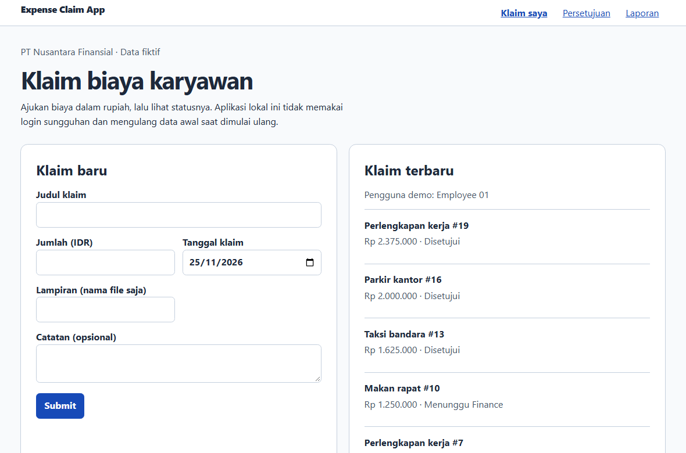
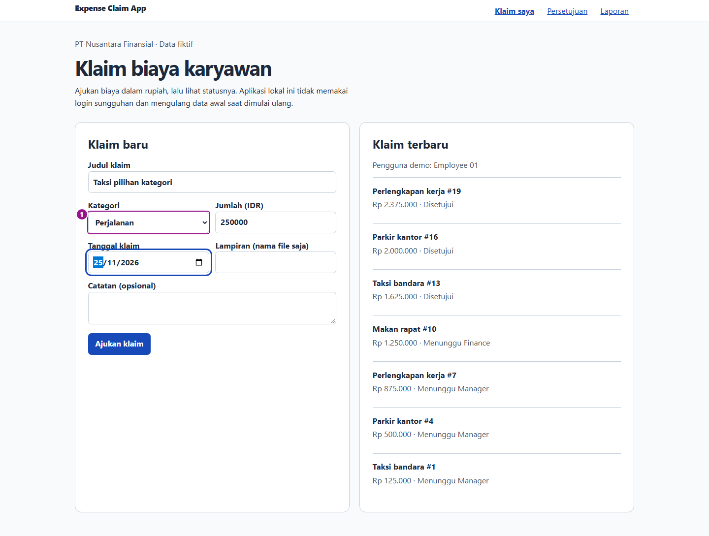
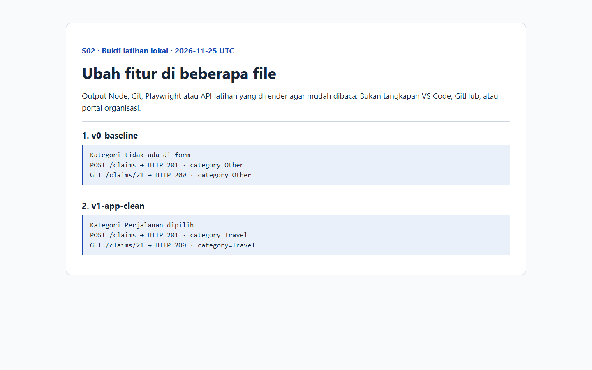

S02 · Level 1 — Inner loop
Ubah fitur di beberapa file
Agent Mode usulkan perubahan lintas file. Bima cek rencana dan bukti sebelum meninjau diff.
Status latihan: manual pending · VS Code. Ikuti langkah · Ulangi dari awal.
Masalah yang dihadapi
Pilihan kategori terlihat kecil, tetapi menyentuh form, payload, penyimpanan, dan tes.
Kerugian: Satu bagian yang terlewat baru terlihat saat QA.
Masalah pada baseline
src/public/index.html
Lihat potongan atau catatan sumber
Baseline: form tidak menampilkan kategori; API memberi default Other.Solusi dan alur
Agent Mode usulkan perubahan lintas file. Bima cek rencana dan bukti sebelum meninjau diff.
- Buka dua versi formulir. Jalankan perbandingan. Buka 127.0.0.1:3000 (tanpa kategori) dan 127.0.0.1:3001 (ada kategori). Isi judul Taksi pilihan kategori, jumlah 250000, tanggal hari ini.
- Pilih Kategori → Perjalanan. Di versi :3001, nomor 1 menunjuk dropdown. Pilih Perjalanan (nilai Travel) dan klik Submit. Di baseline, klik Submit tanpa dropdown: POST menyimpan Other. Keduanya HTTP 201; GET /claims/:id membuktikan pilihan tersimpan.
- Coba Agent Mode di checkout terpisah. Klik ikon Chat → Agent. Lihat rencana, buka Source Control, lalu periksa Terminal saat tes lulus. Sistem penyimpanan sudah menerima category pada baseline; jangan menambah migration tanpa memeriksa skema. Gambar versi bersih bukan hasil sesi Copilot.
- Cek selesai latihan. Jalankan dua ref di :3000 dan :3001. Pakai judul baru, Rp250.000, tanggal hari ini. Baseline tidak punya dropdown dan menyimpan Other. Di versi bersih pilih Perjalanan; POST 201 dan GET detail 200 mengembalikan Travel. Hentikan proses dengan Ctrl+C; jangan hanya refresh bila ingin kembali ke data seed.
- Cara merekam hasil live. Bukti form memakai ref yang sudah ada, bukan hasil sesi VS Code baru. Untuk merekam Agent Mode, jalankan prompt kategori di checkout terpisah; jangan mengubah penyimpanan sebelum mengecek skema yang sudah ada. Setiap nama di bawah menunjuk hasil yang perlu benar-benar terjadi. Gambar pembanding di atas tetap bisa dipakai untuk belajar, tetapi bukan pengganti bukti live. Ini daftar petunjuk gambar, bukan perintah terminal.
Langkah demo
Buka dua versi formulir
Jalankan perbandingan. Buka 127.0.0.1:3000 (tanpa kategori) dan 127.0.0.1:3001 (ada kategori). Isi judul Taksi pilihan kategori, jumlah 250000, tanggal hari ini.
npm run demo:compare -- v1-app-clean
Perbesar S02-before.pngv0-baseline · Form baseline terisi, tanpa field Kategori. Pilih Kategori → Perjalanan
Di versi :3001, nomor 1 menunjuk dropdown. Pilih Perjalanan (nilai Travel) dan klik Submit. Di baseline, klik Submit tanpa dropdown: POST menyimpan Other. Keduanya HTTP 201; GET /claims/:id membuktikan pilihan tersimpan.
npm run shots -- S02
Perbesar S02-after-annotated.pngv1-app-clean · dianotasi · Nomor 1 menandai pilihan Kategori (Perjalanan). Coba Agent Mode di checkout terpisah
Klik ikon Chat → Agent. Lihat rencana, buka Source Control, lalu periksa Terminal saat tes lulus. Sistem penyimpanan sudah menerima category pada baseline; jangan menambah migration tanpa memeriksa skema. Gambar versi bersih bukan hasil sesi Copilot.
Tambahkan pilihan Travel, Meals, Equipment, Other pada form klaim. Periksa skema, payload, tampilan daftar, dan tes; jalankan npm test.
Perbesar S02-local-result.pngOutput lokal yang dirender · bukan layar portal · Output pemeriksaan lokal S02: v0-baseline; v1-app-clean. Cek selesai latihan
Jalankan dua ref di :3000 dan :3001. Pakai judul baru, Rp250.000, tanggal hari ini. Baseline tidak punya dropdown dan menyimpan Other. Di versi bersih pilih Perjalanan; POST 201 dan GET detail 200 mengembalikan Travel. Hentikan proses dengan Ctrl+C; jangan hanya refresh bila ingin kembali ke data seed.
npm run demo:compare -- v1-app-cleanCara merekam hasil live
Bukti form memakai ref yang sudah ada, bukan hasil sesi VS Code baru. Untuk merekam Agent Mode, jalankan prompt kategori di checkout terpisah; jangan mengubah penyimpanan sebelum mengecek skema yang sudah ada. Setiap nama di bawah menunjuk hasil yang perlu benar-benar terjadi. Gambar pembanding di atas tetap bisa dipakai untuk belajar, tetapi bukan pengganti bukti live. Ini daftar petunjuk gambar, bukan perintah terminal.
1. S02-01-agent-plan.png Di VS Code → Chat → Agent kirim prompt yang meminta pilihan Travel, Meals, Equipment, Other dan tes lintas file. Ambil layar ketika rencana yang nyata tampil, sebelum menilai hasilnya. 2. S02-02-files-changed.png Buka Source Control → Changes setelah penulisan berhenti. Tunjukkan form/payload/validasi/tes yang benar-benar berubah. Tidak perlu memaksa migrasi jika skema sudah menyimpan category. 3. S02-03-tests-green.png Buka terminal checkout yang sama; jalankan npm test, dan npm run e2e bila UI berubah. Foto ringkasan saat seluruh tes yang dijalankan lulus. Jangan gunakan tes dari ref lain sebagai bukti.


Sebelum dan sesudah
Geser pembanding atau gunakan tombol panah pada kontrol. Kedua gambar bisa dibuka terpisah.
| Bagian | Sebelum | Sesudah / target |
|---|---|---|
| Perilaku | Form tidak punya kategori; POST menyimpan Other. | App bersih: pilih Perjalanan, lalu POST dan GET detail mengembalikan Travel. |
| Bukti visual | Ada tangkapan lokal. | Ada tangkapan lokal. |
| Keputusan | Peserta membaca keadaan awal. | Manusia memeriksa hasil sebelum meneruskan. |
Manfaat
- Bima bisa melihat apakah perubahan dari UI sampai tes lengkap.
Bukti dan sumber
Template issue S02 · Data latihan dan pengukuran.
 Perbesar S02-after.png
Perbesar S02-after.png3 layar yang belum direkam
S02-01-agent-plan.pngS02-02-files-changed.pngS02-03-tests-green.png
Ulangi latihan
Berhenti dari terminal server dengan Ctrl+C; jalankan npm run demo:before lagi. Data demo kembali ke seed; tidak ada perubahan ke GitHub.
npm run reset
npm run demo:before